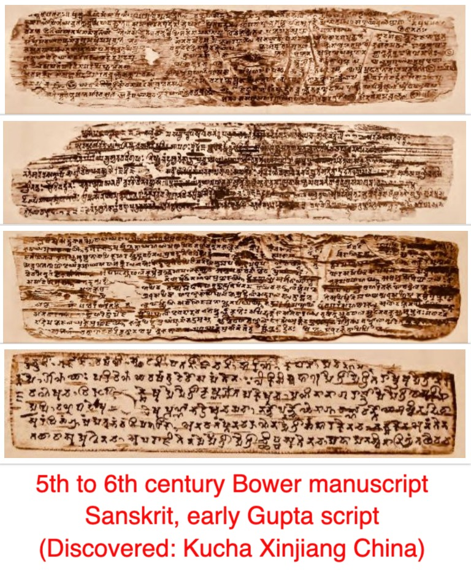

Obras poco conocidas que conservan ideas sobre ciencia, arquitectura, medicina, lenguaje, naturaleza y sociedad.
No es una clasificación de los mejores libros, sino una guía de descubrimiento. Las fechas y autorías pueden ser inciertas; muchos textos evolucionaron mediante redacción, comentario y copia.
Tratado sánscrito tradicionalmente asociado al rey Bhoja, siglo XI; aborda arquitectura, medidas, planificación y dispositivos mecánicos.
Pruebas y límites: La autoría y la fecha deben expresarse con cautela.
FIELD STUDY 02
Mayamata — arquitectura y planificación
Tratado sánscrito Vāstuśāstra sobre selección del terreno, medidas, templos, viviendas y asentamientos.
Pruebas y límites: Es prescriptivo; no demuestra que todos los constructores lo siguieran.
FIELD STUDY 03
Aparājitapṛcchā — templos e imágenes
Obra medieval sánscrita vinculada a tradiciones arquitectónicas del oeste de India; trata planos, medidas e iconografía.
Pruebas y límites: Comprueba fecha y autoría en ediciones especializadas.
FIELD STUDY 04
Yuktibhāṣā — razonamiento matemático
Obra en malayalam de Jyeṣṭhadeva, generalmente del siglo XVI, con demostraciones, series infinitas y trigonometría.
Pruebas y límites: No debe equipararse sin matices al cálculo moderno.
FIELD STUDY 05
Manuscrito Bower — medicina
Colección de textos médicos sánscritos sobre corteza de abedul, hallada en Asia Central y datada generalmente en los siglos V–VI.

El manuscrito Bower: folios de corteza de abedul con textos médicos y afines en sánscrito, datados generalmente entre los siglos V y VI. Imagen: Wikimedia Commons, CC BY-SA 4.0. View source and licence
Pruebas y límites: Es una colección manuscrita, no un solo libro.
FIELD STUDY 06
Bṛhat Saṃhitā — enciclopedia del mundo
Compendio del siglo VI de Varāhamihira sobre astronomía, calendarios, clima, arquitectura, agua, plantas, gemas y costumbres.
Pruebas y límites: No todas sus creencias históricas son ciencia moderna.
FIELD STUDY 07
Baudhāyana Śulbasūtra — geometría ritual
Texto que conserva procedimientos geométricos para construir altares rituales.
Pruebas y límites: La fecha se debate; no es un manual moderno.
FIELD STUDY 08
Hastividyārṇava — elefantes y saber cortesano
Manuscrito ilustrado de la corte Ahom de Assam sobre elefantes, su cuidado, clasificación y uso real.
Pruebas y límites: Es de época moderna temprana, no antiguo en sentido estricto.
FIELD STUDY 09
Mānasollāsa — enciclopedia de un rey
Compendio del siglo XII atribuido a Someśvara III sobre gobierno, artes, música, comida, deporte y vida cortesana.
Pruebas y límites: Refleja una perspectiva cortesana, no toda la sociedad.
FIELD STUDY 10
Tantrasaṅgraha — astronomía matemática de Kerala
Obra de 1501 de Nilakantha Somayaji sobre astronomía matemática y modelos del movimiento planetario.
Pruebas y límites: Debe leerse con traducciones académicas.